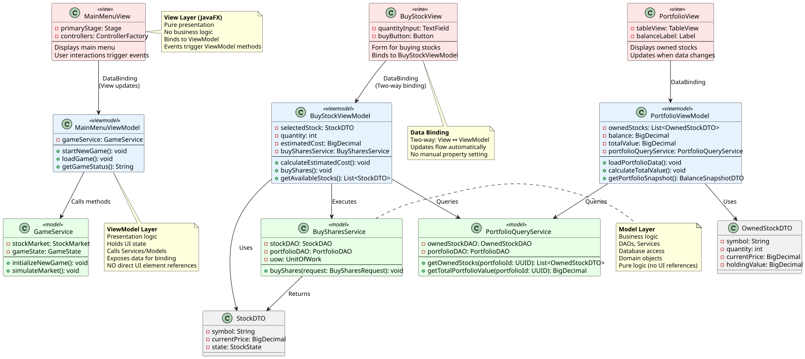

Software Design og Test

View: src/presentation/controllers/ (JavaFX Controllers)
ViewModel: src/presentation/viewModels/
Model: src/business/services/
// Tæt kobling: Logik i Controller
public class BuyStockControllerBad {
@FXML private TextField quantityField;
@FXML private Label balanceLabel;
@FXML
private void onBuyButtonClicked() {
// Direkte databasekald i event handler!
String symbol = getSelectedStock();
int qty = Integer.parseInt(quantityField.getText());
database.updatePortfolio(...);
database.createTransaction(...);
// Direkte UI manipulation
balanceLabel.setText("Nu opdateret!");
}
// Umuligt at unit-teste uden en JavaFX test-simulator!
}
Se: src/presentation/viewModels/BuyStockViewModel.java
// ViewModel: Properties for binding, ingen UI-elementer
public class BuyStockViewModel {
private final BuySharesService buySharesService;
private final PortfolioQueryService portfolioQueryService;
// JavaFX Properties - binder til View
private final StringProperty stockSymbol = new SimpleStringProperty("");
private final IntegerProperty quantity = new SimpleIntegerProperty(1);
private final ObjectProperty estimatedCost =
new SimpleObjectProperty<>(BigDecimal.ZERO);
public BuyStockViewModel(BuySharesService buySharesService,
PortfolioQueryService portfolioQueryService, FeeStrategy feeStrategy) {
this.buySharesService = buySharesService;
this.portfolioQueryService = portfolioQueryService;
// Auto-recalculate når quantity ændres
quantity.addListener((obs, old, newVal) -> recalculateEstimatedCost());
}
public boolean buy() {
// Logik uden JavaFX-referencer!
BuySharesRequest request = new BuySharesRequest(
portfolioId, stockSymbol.get(), quantity.get());
buySharesService.buyShares(request);
return true;
}
// Properties for binding
public IntegerProperty quantityProperty() { return quantity; }
public ObjectProperty estimatedCostProperty() {
return estimatedCost;
}
}
Se: src/presentation/controllers/BuyStockController.java
// Controller: Bindkle mellem View og ViewModel
public class BuyStockController {
@FXML private TextField quantityField;
@FXML private Label estimatedCostLabel;
@FXML private Button buyButton;
private BuyStockViewModel viewModel;
@FXML
public void initialize() {
// Binding: Når quantity ændrer sig, opdater cost
quantityField.textProperty().addListener((obs, old, newValue) -> {
viewModel.setQuantity(Integer.parseInt(newValue));
viewModel.calculateEstimatedCost();
estimatedCostLabel.setText(
viewModel.getEstimatedCost().toString());
});
// Knaptryk delegeres til ViewModel
buyButton.setOnAction(e -> viewModel.buyShares());
}
// Ingen forretningslogik, KUN UI og binding!
}
// Unit test: Tester ViewModel uden JavaFX!
@Test void buyStockViewModel_calculatesCostCorrectly() {
BuyStockViewModel vm = new BuyStockViewModel(
mockBuyService, mockQueryService);
vm.setSelectedStock(new StockDTO("PNDORA",
new BigDecimal("100"), StockState.LIVE));
vm.setQuantity(5);
vm.calculateEstimatedCost();
// 5 * 100 * 1.01 = 505
assertEquals(new BigDecimal("505.00"),
vm.getEstimatedCost());
}
@Test void buyStockViewModel_executesServiceCall() {
vm.buyShares();
verify(mockBuyService).buyShares(
any(BuySharesRequest.class));
}
// Ingen GUI simulator nødvendig, lynhurtigt!
Boilerplate-kompleksitet